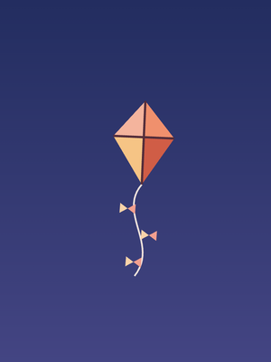
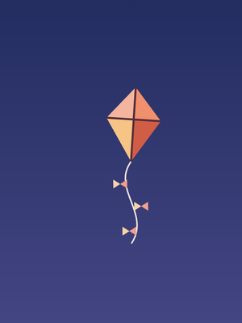
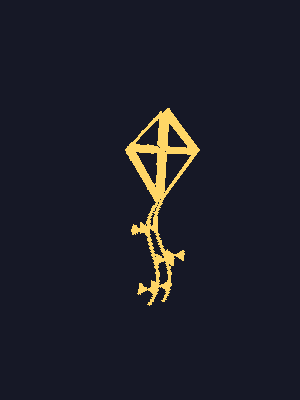

CLAUDE-WALLPAPER · AFTER
The same kite, built with the skill
The lint names the one attribute that makes the app freeze a scene. With it removed, two photos prove the kite moves before the agent says done.
PHOTO 1

PHOTO 2 · ONE SECOND LATER

WHAT CHANGED BETWEEN THEM

LINT_SCENE.PY, BEFORE THE FIX
FREEZE (tested): shape-rendering found; the app draws the scene still.
MOVED.PY, AFTER THE FIX
MOVING | gutter changed px=4066
MOVING · 4,066 changed pixels
Photos of the right margin of the Claude desktop window (engine 2.1.325), taken a second apart with the wallpaper lab. The scene is the skill's general example, reference/example-kite. The two scenes differ by one attribute.